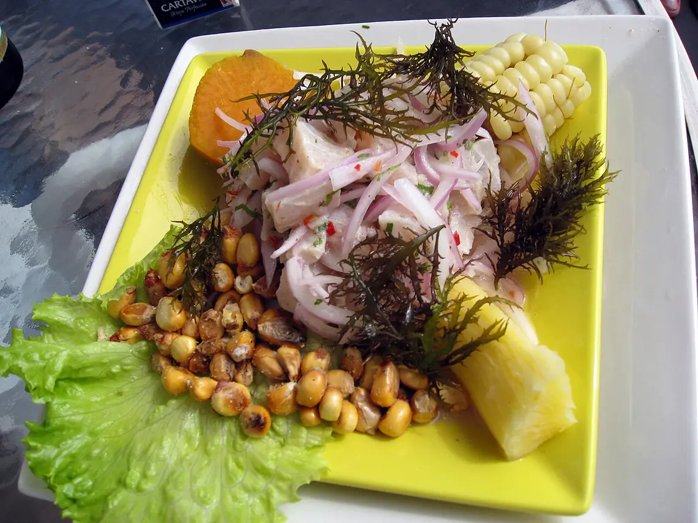
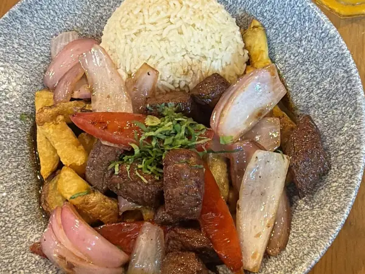
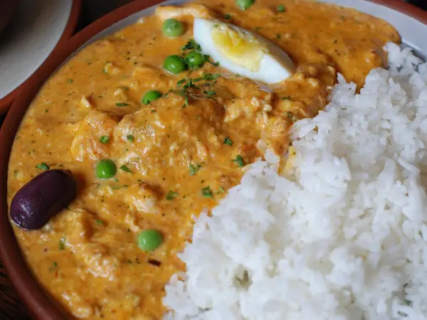
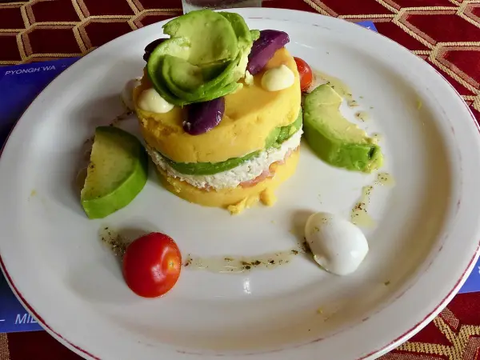
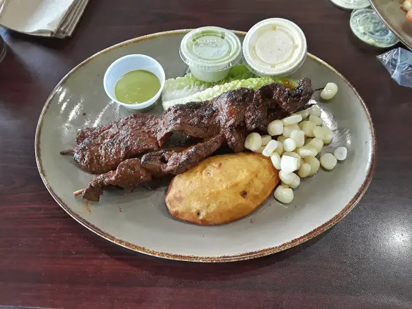
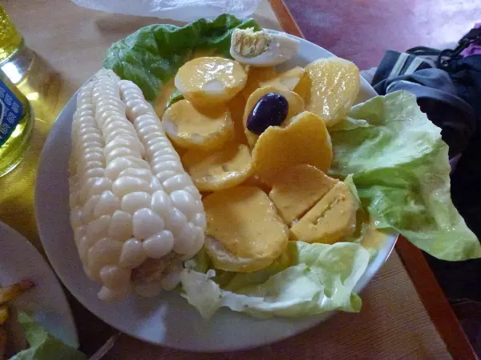
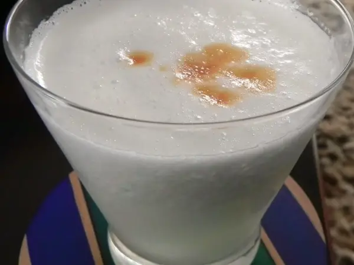
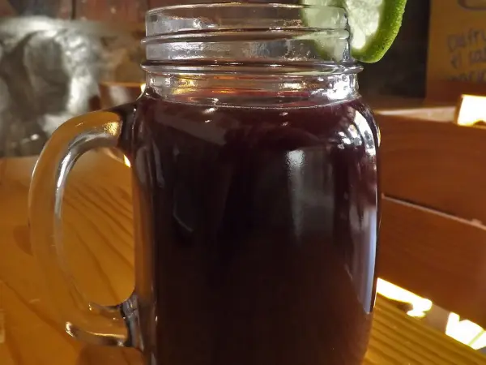

Ceviche classique
16 €Poisson blanc mariné au citron vert, leche de tigre, oignon rouge, patate douce et cancha (maïs grillé).
Le plus demandé
Ceviche, lomo saltado, ají de gallina… Sur place, à emporter ou en traiteur pour vos événements.
La carte
Des plats de Lima, faits maison. Tout se commande aussi à emporter.
Poisson blanc mariné au citron vert, leche de tigre, oignon rouge, patate douce et cancha (maïs grillé).
Le plus demandé
Bœuf sauté au wok avec oignon rouge, tomate et sauce soja, pommes de terre dorées et riz blanc.
Le classique de Lima
Effiloché de poulet dans une crème douce d'ají amarillo, riz blanc, œuf et olive noire.
Doux, pas piquant
Purée de pomme de terre jaune au citron vert, poulet et avocat.

Brochettes de cœur de bœuf marinées, grillées, maïs et pomme de terre.

Pommes de terre, sauce crémeuse au fromage et à l'ají amarillo.
Végétarien
Pisco, citron vert, blanc d'œuf, angostura.

Maïs violet, ananas, cannelle. Sans alcool.
Carte d'exemple : plats et prix indicatifs.
Une petite salle
Le soir et le week-end, les tables partent vite. Réservez sur WhatsApp : on vous répond tout de suite, à toute heure.
Traiteur
Anniversaires, déjeuners d'équipe, fêtes de famille : nos plats livrés pour vos invités, à partir de 10 personnes.
Demander un devis sur WhatsAppInfos pratiques